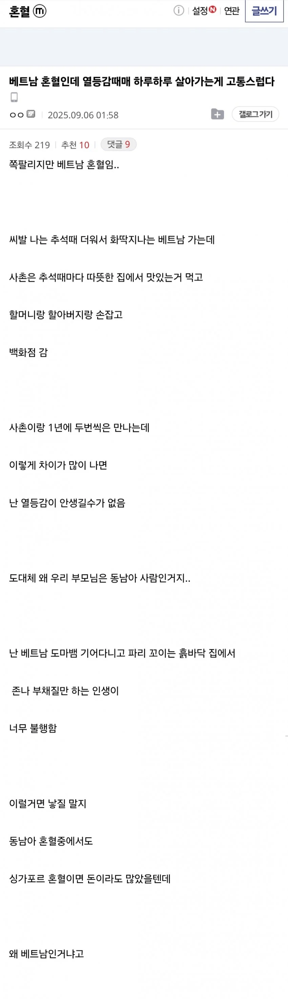
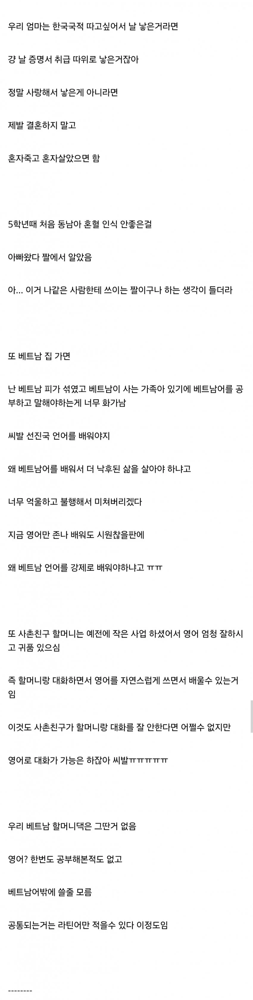
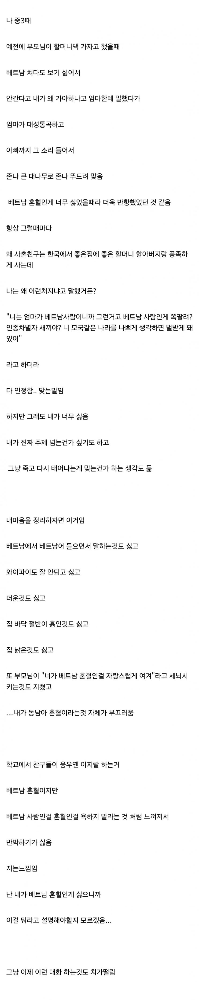
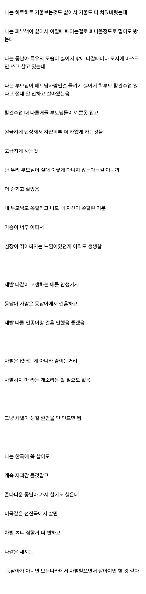
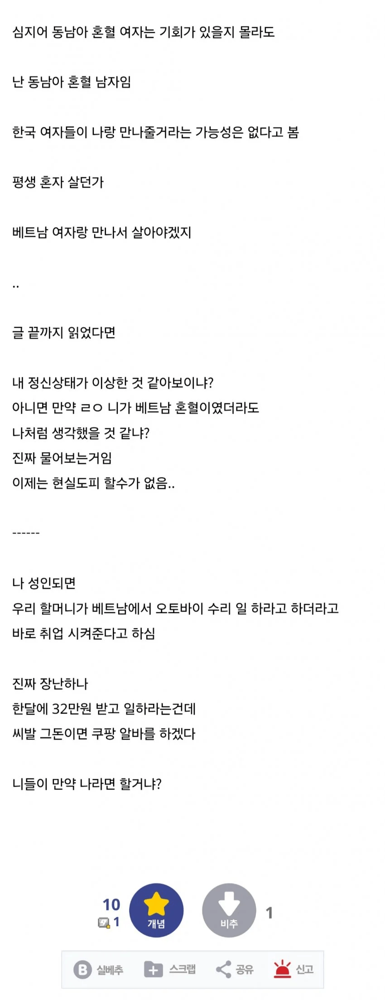

애들한테 응우옌 소리 듣고 차별받는게 너무 힘들다는데
정작 베트남가면 썩은 인프라 낙후 + 월급 32만원 ;;;;
ㄹㅇ 스트레스 개 심하겠네





애들한테 응우옌 소리 듣고 차별받는게 너무 힘들다는데
정작 베트남가면 썩은 인프라 낙후 + 월급 32만원 ;;;;
ㄹㅇ 스트레스 개 심하겠네
요즘 그래도 원체 다문화 가정이 증가해서
인식이 많이 누그러진편이라생각했는데 안타깝네
다문화사람들 많이 사는 동네로 이사가서 자연스레 녹는건어떨까도싶다
한국에서 나고 자랐으면 한국인이지 뭐가 더 중요하냐
스스로 열등감 만들어 자신을 괴롭힐 이유가 없다
순혈 한국인이라도 스스로 병신같이 살면 병신 취급을 받는다
운동 열심히 해서 몸뚱이만이라도 튼튼해 보이고 모난곳 없이 살면 모두 친절해진다
저건 스스로 만든게 아님ㅇㅇ
우리가 백날 말해봐야 쟤와 비슷한 삶을 살아보질 못 해서 일침도 못 함. 주변인이라면 차별없이 대해주는 게 최선이지
위에 일침 존나하네ㅋㅋㅋㅋ 애미창녀같은 일침이긴한데
애비가 베트남 여자랑 결혼한 도태남인게 더 최악인듯
신세한탄이나 쳐 하고 있는 순간 뭐,,, 그냥,,,
ㄹㅇ니인생이랑 비슷한듯
국제결혼보다는 사실 아빠엄마가 사랑해서 낳은게 아니라 매매혼인 경우가 좆같은거지 뭐 어린 나이에 사춘기 왔는데 부모가 매매혼인 경우에 긍정적이기 쉬움? 난 모르겠다
진짜 애미뒤진 좆병신 긍정충들 개많네ㅋㅋㅋㅋㅋㅋ
나중에 지들애미애비 장례식장에서 밥먹다가 밥은 맛있어서 좋네 이지랄할 개좆병신새끼들인가ㅋㅋㅋㅋㅋㅋ
뭔 개소리야. 그냥 저건 베트남이라서 싫은 게 아니라 가난해서 싫은 거잖아. 베트남 토호 출신이었으면 좋다고 갔을 거면서. 꼭 긍정적으로 살 필요는 없는데 문제의 원인을 잘못 찾으면 평생 부정적으로 살게 됨. 저러면 나중에 가서는 내가 ~~한 이유는 베트남 한국 혼혈이라 그래 로 귀결한다고. 그건 자기 인생에서 좋은 거 아님.
댓글 지들이 배트남 튀기면 똑같은 생각할거면서
솔직히 현대기준 제일 처참한 인종이 동남아지..
흑인들은 오랜시간 투쟁과 미국 과 유럽에서 각종 업계에서 이뤄놓은 성취들이 쌓여서 그나마 존중이 있고
오랜시간 다양한 인종이랑 섞인 흑인종들의 외형도 긍정적으로 변한 사람도 많고...
그에반해 동남아는 대부분 못사는데 이도저도 아닌 안좋은 특색들이 쌓여있는 인종이라...
빠른 자살이 답일수도 ㅠ
차라리 아예 미국가는 게 나아
씁.... 안쓰럽네
이해가 안 되는 건 아닌데 엄마는 또 무슨 죄고
힘내라.
근데 얘 같이 자존감 낮은애는 자기가 선망하는 사촌이 되도 별볼일 없을거 같은데
주위애들이 응우옌이라고 놀려도 반항도 지가 포기한거면 이 자존감으론 사촌이 되도 또 다른 문제를 외부의 탓으로 치부하고
자기가 개선하려는 시도는 안할걸
이래서 사람은 반대로 생각할 줄 알아야 함.
반대로 베트남어 조금할 줄 아는 한국혼혈 포지션으로 베트남 가면 삼성 관리자직급부터 레드카펫 깔려서 어서옵쇼 하게 되고 현지 이쁜 베트남 여자애들 융단폭격하면서 재밌게 살 수 있을텐데
진짜 지랄 옆차기하고 있다 니나 반대로 생각해서 가서 관리자직급으로 레드카펫 깔리니까 어서옵쇼 당하고 여자애들 융단폭격해라 ㅋㅋㅌ 뭔 개저씨같은 생각을 하는지 참.. 니는 한국 순혈이니까 가면 그냥 여자애들이 다 가랭이 벌리겠네 뭐하러 한국에서 똥같은 댓글달면서 살고 있냐?
표현이 저래서 그렇지 영어보다 베트남어 같은 소수언어 할줄알면 가치가 더 높은건 사실임. 특히 우리나라는 베트남에 생산공장 있어서 기업들 베트남에 다 진출해 있는데 일단 현지에서 대리인 리스크가 개높음. 영어나 한국어 할줄아는 베트남인들 뽑아다 관리인 시키는데 이시키들이 횡령, 배임, 근태 등 리스크가 존나 높음. 근데 잘못 건드리면 직원들 선동하고 정부에 꼰질러서 못살게 굴기 때문에 현지 주재원들 골치 꽤나 썩고 걍 어르고 달래는 실정임. 여기에서 베트남어 할줄알고 한국에서 자라서 정체성이 한구인 한국베트남 혼혈이면 한국에서 정규과정만 마쳐도 뽑아다 주재원 보낼만 하지. 한국 급여에 주재원 체류비 지원이면 베트남에서 개 풍족하게 살 수 있는데. 그러니까 생각을 조금만 바꿔서 베트남어 할줄아는 이점 살려서 공부좀 해주고 취준 빡세게 하면 오히려 타고갈 길이 얼마든지 열리는건 맞지
여기서 일침할 필요없이 혼혈보다 더 유리한 순혈 한국인으로 니들이 일침한 내용대로 가서 성공하면 됨. 말대로면 그냥 성공가도 100프로인데 왜 한국에서 비루한 삶 살고 있음?
한국인이라 베트남이 익숙지 않고 낯설다고? 내 마음의 고향은 한국이고 내가 살아야할 곳은 여기라고? 쟤가 그마음임 ㅋㅋㅋ
전쟁때 미군남자+한국여자 2세들은 진짜 얼마나 좆같았을까 ㅋㅋ
당사자가 아니면 이해할수없다
마인드는 한국인인데 얼마나 힘들지 상상이 간다
근데 어쩌겠노 해결방안은 없고 받아들이고 살아가는방법뿐인데
저건 차라리 군대에 가서 말뚝 박는게 낫다. 계급으로 누를수가 있다.
당사자가 호소하는데 뭐라고 하겠음
문장 쓴거 보면 그냥 한국사람이구만 참 힘든 세상이네